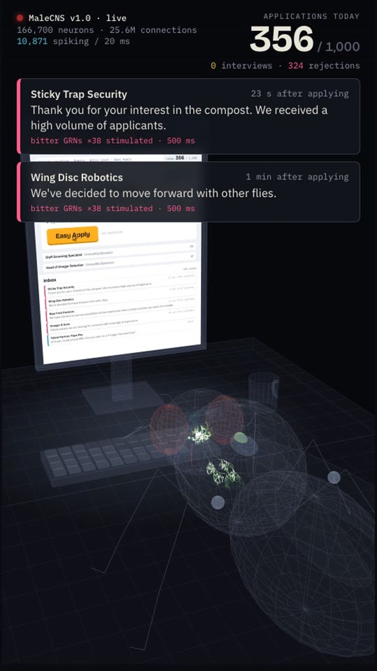
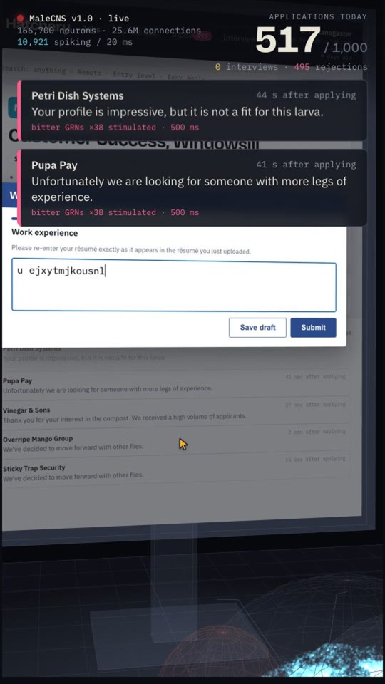
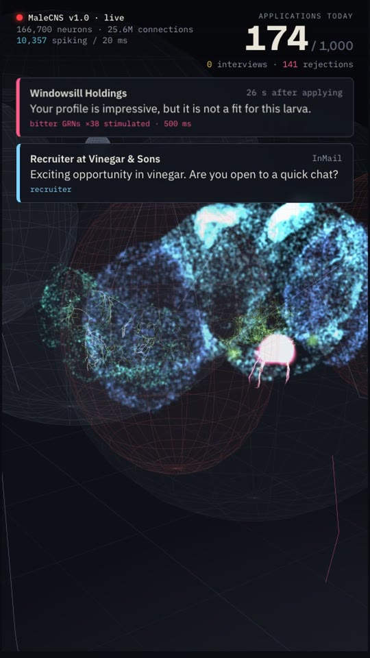

Built for real: the whole-CNS connectome simulated, every DNg100 spike clicking Easy Apply in a real browser, and each interview or rejection fed back into the fly's sugar or bitter taste neurons. The recorded run and the cut reel are below. The interactive fly further down is the original concept sketch.
Every click came from a DNg100 spike. Nothing on the browser side decides when to act. The sim ran at about 0.81× real time with 166,700 neurons and 25.6 million connections, which works out to roughly one application per 1.1 seconds.
The 3D studio is live, not a render. The hologram fly sits at a tiny desk. Its monitor shows the actual board page streamed from the browser. The head holds 140,638 neurons at their real soma positions, and DNg100's traced skeleton carries each spike down the neck.
Run it yourself with ./run --autostart in the Fly folder, then python -m flyjobs cut out/run.mp4 for the reel.



Fly viewer on the top half of the frame, the job board and inbox on the bottom half. Counter burned in at the top right the whole time.
One closed loop, which is the thing most viral fly demos skip. The board's outcome goes back into the brain as taste-neuron stimulation.
The original plan, with notes on where the build departed from it.
A single local web app: infinite feed of generated postings, an Easy Apply button that fills the viewport, a Workday-parody form that forgets the uploaded résumé, and an inbox pane that receives scripted rejections on a timer.
Start from the Mario 64 fly repo cited in the earlier chat, which already maps neurons to controller buttons, or from the published whole-brain LIF code. Pull the MaleCNS connectivity from neuPrint, look up the neuron IDs by cell type, and expose three pins.
A loop of about 80 lines: read the DN rate, act on the board when it crosses threshold, forward board events into the input pins. Headed browser so it can be screen-captured.
Keep this page's renderer and swap the stand-in for the real thing. Portrait render mode at 1080×1920 with the same HUD.
Two OBS sources stacked in a 9:16 canvas: viewer on top, board and inbox below. Record one 12-minute run, cut the time-lapse, record the VO last against picture.
DNg100, descending, forward locomotionLB3c sugar GRNs (Gr64f+), 23 cellsLB1a–d bitter GRNs (Gr33a+), 38 cells